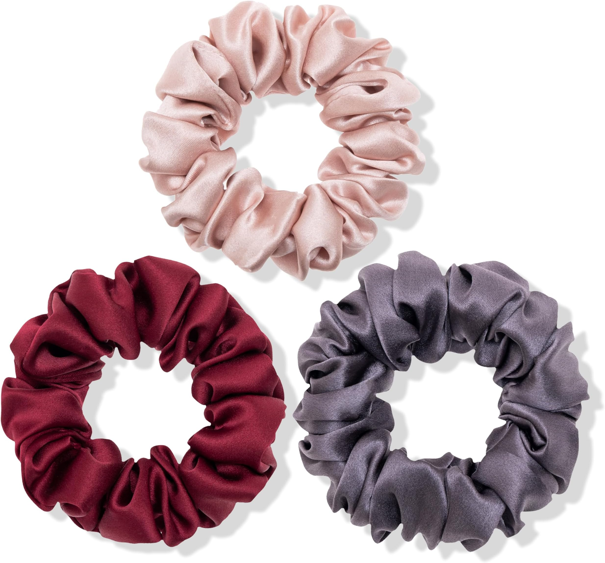
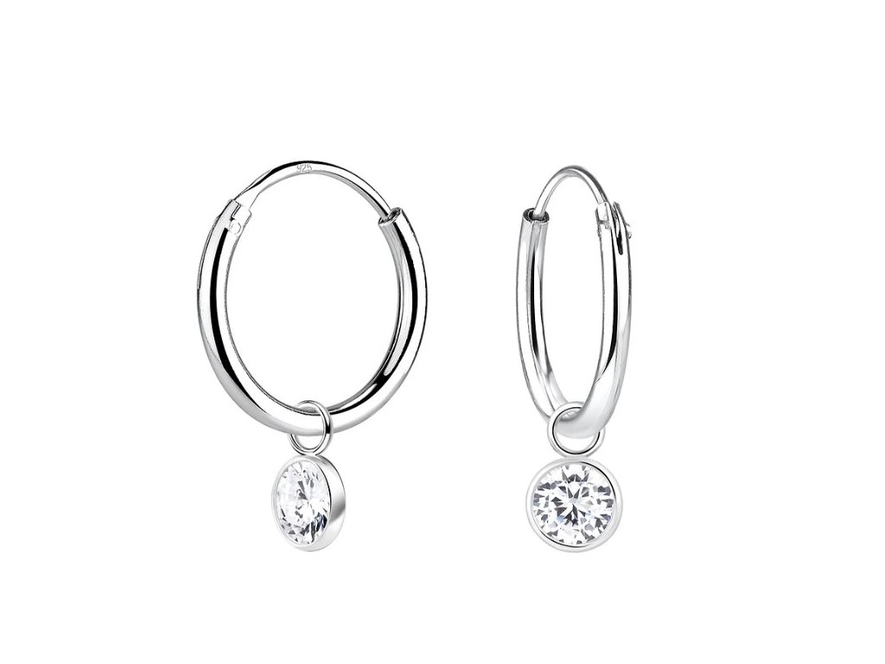
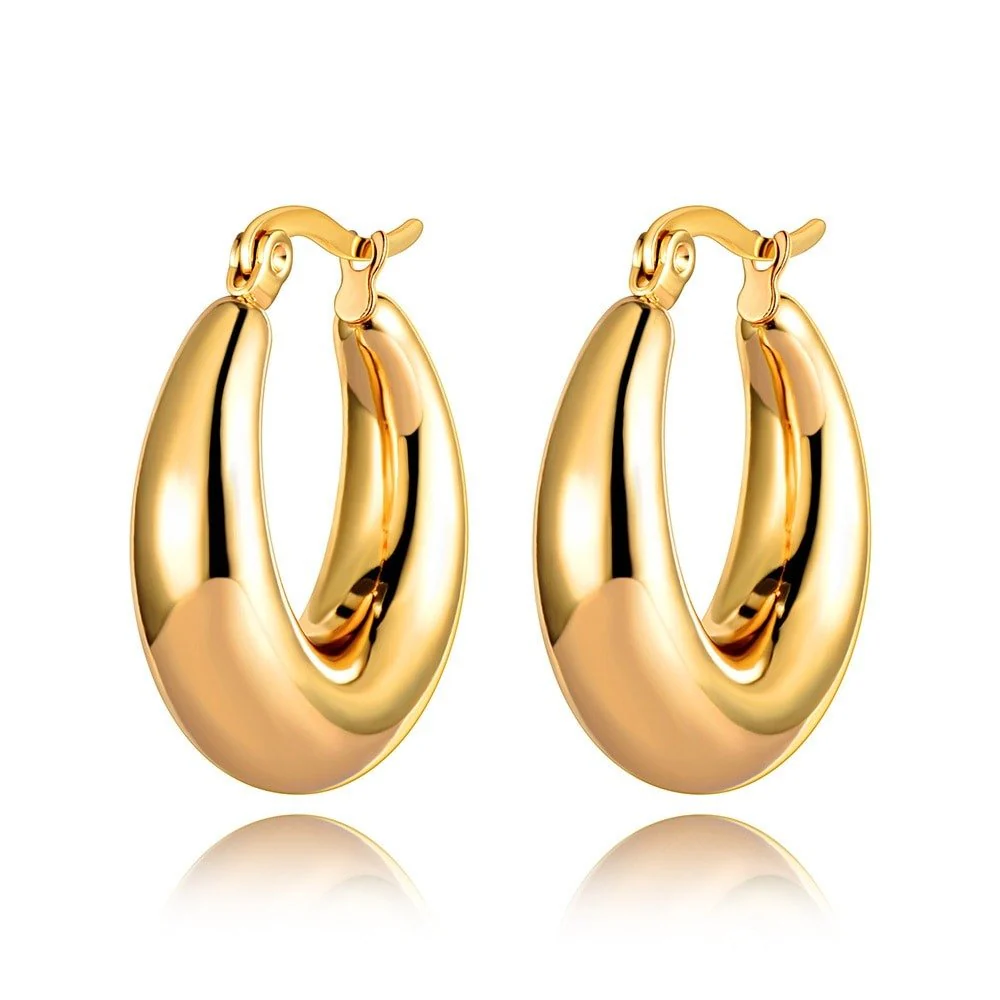
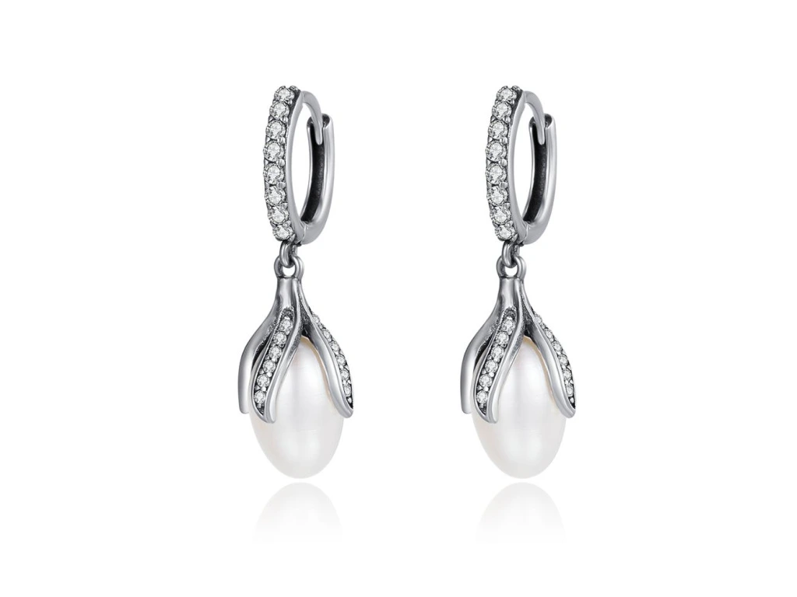
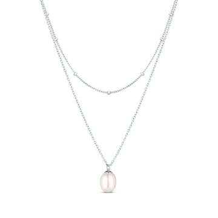
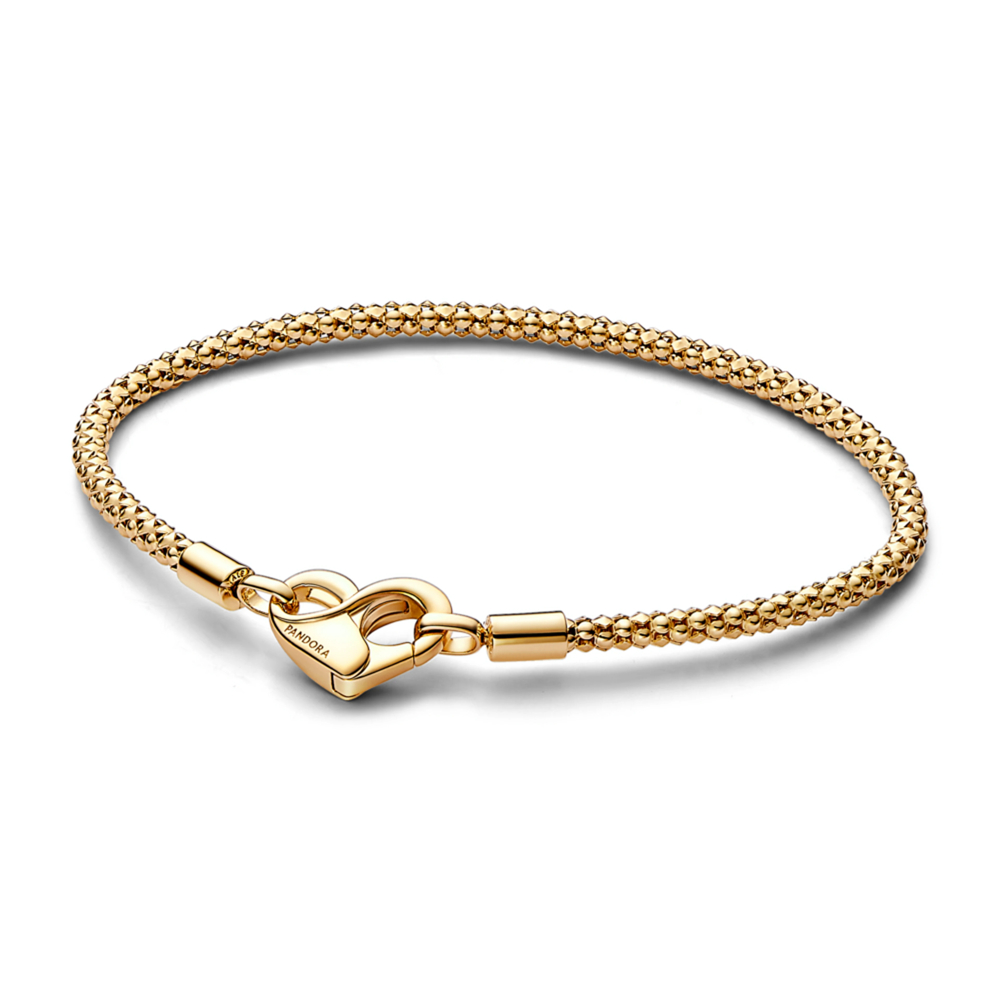

V našem obchodě najdeš pestrou nabídku doplňků a limitovaných edicí. S radostí ti vytvoříme šperky na zakázku, aby každý zákazník měl možnost vlastnit originální kousek. Stačí nás kontaktovat a společně s naším týmem tvůrců vytvoříme návrh podle tvých představ.Každá kolekce má své téma a příběh, který se odráží v použitém materiálu i tvaru. Oblíbená je například kolekce Pearls Line, která je inspirovaná mořskými panami. Všechny šperky jsou hypoalergenní a odolné vůči poškození. Sledujte novinky-několikrát ročne vychází limitované edice. Káždý šperk je dodáván v elegantní dárkové krabičce s certifikátem pravosti.
Základní nabídka
Scrunchies
Jemné saténové gumičky, které chrání vlasy před lámáním, vypadáváním a k tomu vypadají stylově.

Šperky
Decentní i extravagantní ozdoby,které se dají perfektně sladit s každodenním,ale i s odvážným a netradičním outfitem.

Visací stříbrné náušnice CIRLOV jsou dokonalou kombinací jednoduchosti a elegance. Hodí se jak pro každodenní nošení, tak pro menší slavnosti. Praktické kloubové uzavírání zajišťuje pohodlné nošení po celé dny.
Kategorie: Dámské stříbrné náušnice
Záruka: dva roky
Hmotnost: 0,1kg
Typ náušnice: Se zirkony
Typ zapínání: Kloubové
Materiál: Chirurgická ocel
Rozměr: 23mm

Pozlacené HOOP náušnice mají moderní tvar s otvorem a rozměry 19 x 26 mm. Praktické zaklapávací uzavírání zaručuje nejen bezpečnost, ale i pohodlí při nošení. Navzdory svému modernímu stylu je unikátním doplňkem pro různé příležitosti.
Kategorie: Dámské zlaté náušnice
Záruka: dva roky
Hmotnost: 0,1kg
Vzhled náušnice: Objemnější
Typ zapínání: Zaklapávací
Materiál: Chirurgická ocel
Pozlacení: ANO, 18k
 
Pearls Line-náš bestseller je perlový set, který se prodavá celoročně. I přesto se uplně nejvíce objednává na podzim, a to proto, že na podzim dominují vrstvené outfity, tudíž je důležité, aby šperky byly jemné a vyvážené. Perly jsou jeden z největších trendů této sezóny, protože se můžou vrstvit, více pro extravaganci, a zárověň jsou univerzální a jemné, bez velké nápaditosti, ale stále s elegancí.
Stříbrné zatočené náušnice s perlovým přívěskem.
Kategorie: Dámské stříbrné náušnice
Záruka: dva roky
Hmotnost: 0,1kg
Vzhled náušnice: Menší
Typ zapínání: Kloubové
Materiál: Chirurgická ocel
Rozměr: 27,5 x 13 mm
Jemný náhrdelník s perličkou je příkladem minimalistického stylu. Tento náhrdelník se skládá ze dvou jemných řetízků, hodí se na každodenní nošení i na speciální příležitosti.
Kategorie: Stříbrné dámské náhrdelníky
Záruka: dva roky
Hmotnost: 0,1kg
Vzhled náhrdelníku: Decentní, s perlami, s přívěškem, vrstvené
Velikost: Nastavitelná dle tvé potřeby
Materiál: Chirurgická ocel
Rozměr: 37 x 42,5 mm

Naše jedinečné náramky - jednoduchý narámek,na který si můžete dát přívěsky-elementy podle vašeho stylu a nálady.
Elementy na náramek - neobvyklá cesta jak vyjádřit své emoce a pocity, či jak si zvětšnit krásné momenty plné lásky, kamarádství a štěstí.